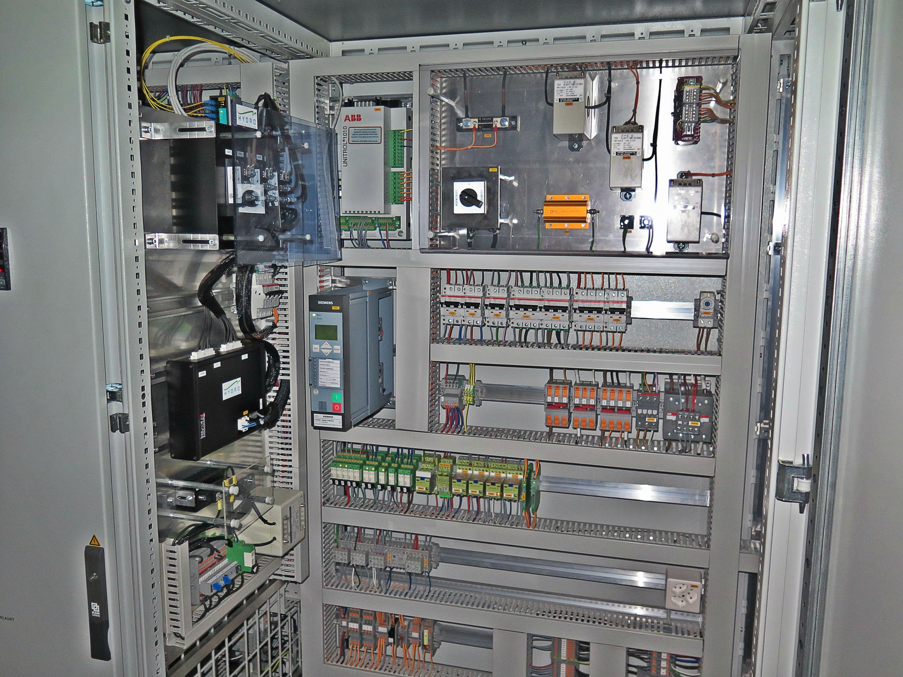
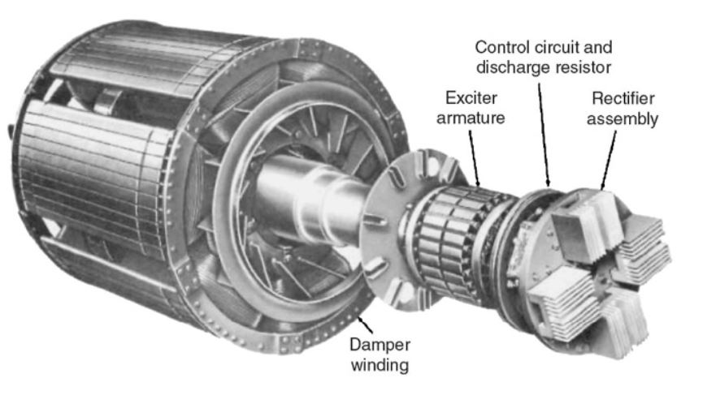
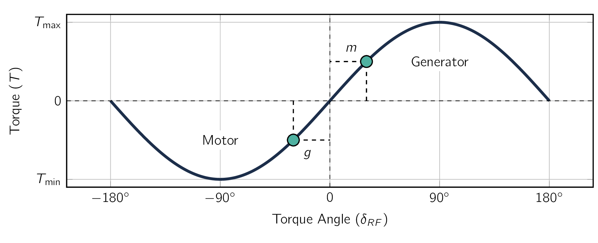
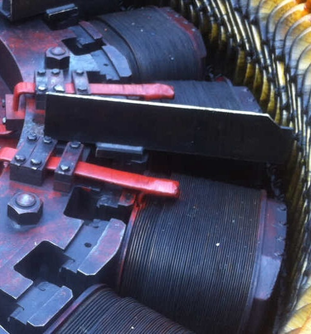

Let’s dive into their construction and understand what makes them different from other machines and why they are the preferred choice when it comes to electric generation application.
In their construction, the armature winding [113] Remember, here the armature means the part of the machine where ACAlternating CurrentAn electric current that periodically reverses direction and changes its magnitude continuously with time, in contrast to direct current (DC), which flows only in one direction. flows and given in a SynMSynchronous Machinean AC electrical device which operates at a constant synchronous speed, serving as either a synchronous generator (alternator) or a synchronous motor. It features a stationary stator with three-phase windings and a rotating rotor excited by direct current (DC) or permanent magnets. the rotor is DCDirect CurrentOne-directional flow of electric charge. Direct current may flow through a conductor such as a wire, but can also flow through semiconductors, insulators, or even through a vacuum as in electron or ion beams. The electric current flows in a constant direction, distinguishing it from alternating current (AC). A term formerly used for this type of current was galvanic current., which leaves only the stator. is almost always on the stator and is mostly designed as a three-phase winding.
When classifying SynMSynchronous Machinean AC electrical device which operates at a constant synchronous speed, serving as either a synchronous generator (alternator) or a synchronous motor. It features a stationary stator with three-phase windings and a rotating rotor excited by direct current (DC) or permanent magnets. it is generally put into one of two (2) categories:
- Cylindrical-rotor
-
The rotor shape is cylindrical so it has a constant air-gap. It is used for two- and four- pole turbine generators and generally has high rotation speed.
- Salient-pole
-
has protrusions (i.e., poles) from the rotor which creates an air-gap that changes periodically. It is used generally as multi-polar, slow-speed hydroelectric generators and used as generators for ships, which can be seen in Fig. 5.1.
The DCDirect CurrentOne-directional flow of electric charge. Direct current may flow through a
conductor such as a wire, but can also flow through semiconductors, insulators, or even through
a vacuum as in electron or ion beams. The electric current flows in a constant direction,
distinguishing it from alternating current (AC). A term formerly used for this type of current was
galvanic current. power required for excitation of a SynMSynchronous Machinean AC electrical
device which operates at a constant synchronous speed, serving as either a synchronous
generator (alternator) or a synchronous motor. It features a stationary stator with three-phase
windings and a rotating rotor excited by direct current (DC) or permanent magnets. field
winding [114]
This is approximately one to a few percent of the rating of the SynMSynchronous
Machinean AC electrical device which operates at a constant synchronous speed, serving as
either a synchronous generator (alternator) or a synchronous motor. It features a stationary
stator with three-phase windings and a rotating rotor excited by direct current (DC) or
permanent magnets. is supplied by an excitation system. In the case of a PMPermanent
MagnetAn object made from a material that is magnetized and creates its own persistent
magnetic field SynMSynchronous Machinean AC electrical device which operates at a constant
synchronous speed, serving as either a synchronous generator (alternator) or a synchronous motor.
It features a stationary stator with three-phase windings and a rotating rotor excited by
direct current (DC) or permanent magnets., no power is required to excite the DCDirect
CurrentOne-directional flow of electric charge. Direct current may flow through a conductor such as a
wire, but can also flow through semiconductors, insulators, or even through a vacuum as in
electron or ion beams. The electric current flows in a constant direction, distinguishing it
from alternating current (AC). A term formerly used for this type of current was galvanic
current. rotor flux and which allows the potential for higher machine efficiency. There is a
significant trade-off, as with PMPermanent MagnetAn object made from a material that is
magnetized and creates its own persistent magnetic field excitation it is NOT possible
to adjust the magnitude of the DCDirect CurrentOne-directional flow of electric charge.
Direct current may flow through a conductor such as a wire, but can also flow through
semiconductors, insulators, or even through a vacuum as in electron or ion beams. The electric
current flows in a constant direction, distinguishing it from alternating current (AC). A term
formerly used for this type of current was galvanic current. rotor flux in response to operating
conditions.
In modern systems, the excitation is supplied from ACAlternating CurrentAn electric current that
periodically reverses direction and changes its magnitude continuously with time, in contrast to direct
current (DC), which flows only in one direction. exciters and solid-state rectifiers. [115] 
In older machines, the field excitation current was typically supplied through slip rings from a
DCDirect CurrentOne-directional flow of electric charge. Direct current may flow through a conductor
such as a wire, but can also flow through semiconductors, insulators, or even through a vacuum as in
electron or ion beams. The electric current flows in a constant direction, distinguishing it
from alternating current (AC). A term formerly used for this type of current was galvanic
current. machine, referred to as the exciter, [116] 
SynGSynchronous GeneratorSynchronous Generator can easily be operated in parallel. In fact, the electricity supply systems typically have hundreds of them operating in parallel, interconnected by thousands of miles of transmission lines, and supplying electric energy to loads scattered over areas of many thousands of square miles. These huge systems have grown in spite of the necessity for designing the system so that synchronism between generators is maintained following disturbances and the problems, both technical and administrative, which must be solved to coordinate the operation of such a complex system. When a SynGSynchronous GeneratorSynchronous Generator is connected to a large interconnected system containing many other SynGSynchronous GeneratorSynchronous Generator, the voltage and frequency at its armature terminals are substantially fixed by the system.
The magnetic flux corresponding to this applied voltage therefore rotates at the synchronous speed as determined by the system electrical frequency .
For the production of a steady, uni-directional electro-mechanical torque, the fields of the stator and rotor must rotate at the same speed, [117] i.e., they must move in synchronicity. and therefore the rotor must turn exactly the system-imposed synchronous speed.
Any individual generator is just a small fraction of the total system generation. It cannot significantly affect the system voltage or frequency.
It is therefore often useful, when studying the behaviour of an individual generator or group of generators, to represent the remainder of the system as a constant-frequency, constant-voltage source, commonly referred to as an infinite bus. [118] a simplifying model in electrical power systems which represents a very large grid with constant voltage and frequency, regardless of any load changes or connected generators. It acts as an ideal source with zero impedance and infinite rotational inertia, making it a useful approximation for analyzing how smaller systems or generators interact with the larger, more stable power grid.
Many important features of SynMSynchronous Machinean AC electrical device which operates at a constant synchronous speed, serving as either a synchronous generator (alternator) or a synchronous motor. It features a stationary stator with three-phase windings and a rotating rotor excited by direct current (DC) or permanent magnets. behaviour can be understood from the analysis of a single machine connected to an infinite bus. The steady-state behavior of a SynMSynchronous Machinean AC electrical device which operates at a constant synchronous speed, serving as either a synchronous generator (alternator) or a synchronous motor. It features a stationary stator with three-phase windings and a rotating rotor excited by direct current (DC) or permanent magnets. can be visualized in terms of the torque equation as follows:
| (5.1) |
where is the resultant air-gap flux per pole, is the MMFMagneto-motive ForceThe magnetic pressure which drives magnetic flux in a magnetic circuit, and is the work done to move a unit magnetic pole. of the DCDirect CurrentOne-directional flow of electric charge. Direct current may flow through a conductor such as a wire, but can also flow through semiconductors, insulators, or even through a vacuum as in electron or ion beams. The electric current flows in a constant direction, distinguishing it from alternating current (AC). A term formerly used for this type of current was galvanic current. field winding, and is the electrical phase angle between magnetic axes of and .
To simplify expressions, the minus sign has been omitted with the understanding that the electromechanical torque acts in the direction to bring the interacting fields into alignment.
During normal steady-state operation, the electromechanical torque balances the mechanical torque applied to the shaft. In a generator, the prime-mover torque acts in the direction of rotation of the rotor, pushing the rotor MMFMagneto-motive ForceThe magnetic pressure which drives magnetic flux in a magnetic circuit, and is the work done to move a unit magnetic pole. wave ahead of the resultant air-gap flux.
The electro-mechanical torque then opposes rotation.
The opposite situation exists in a SynMSynchronous Machinean AC electrical device which operates at a constant synchronous speed, serving as either a synchronous generator (alternator) or a synchronous motor. It features a stationary stator with three-phase windings and a rotating rotor excited by direct current (DC) or permanent magnets., where the electromechanical torque is in the direction of rotation, in opposition to the retarding torque of the mechanical load on the shaft. Variations in the electromechanical torque result in corresponding variations in the torque angle () as seen from Eq. (5.1) . The relationship is shown in the form of a torque-angle curve in Fig. 5.3, where the field current [119] i.e., rotor MMFMagneto-motive ForceThe magnetic pressure which drives magnetic flux in a magnetic circuit, and is the work done to move a unit magnetic pole. and resultant air-gap flux are assumed constant. Positive values of torque represent generator action, corresponding to positive values of for which the rotor MMFMagneto-motive ForceThe magnetic pressure which drives magnetic flux in a magnetic circuit, and is the work done to move a unit magnetic pole. wave leads the resultant air-gap flux.

As the prime-mover torque is increased, the magnitude of must increase until the electromechanical torque balances the shaft torque. The readjustment process is actually a dynamic one, requiring a change in the mechanical speed of the rotor, typically accompanied by a damped mechanical oscillation of the rotor about its new steady-state torque angle. This oscillation is referred to as a hunting transient. [120] The phenomenon of oscillation of the rotor about its final equilibrium position is called Hunting. On the sudden application of load, the rotor search for its new equilibrium position, and this process is known as Hunting. In such a transient, some changes in the amplitudes of the resultant flux-density and field-winding MMFMagneto-motive ForceThe magnetic pressure which drives magnetic flux in a magnetic circuit, and is the work done to move a unit magnetic pole. wave may also occur because of various factors such as:
-
saturation effects,
-
the effect of the machine leakage impedances,
-
the response of the machine’s excitation system, and so on
To keep things simple, we will ignore such effects.
As can be seen from Fig. 5.3, an increase in prime-mover torque will result in a corresponding increase in the torque angle. When becomes , the electromechanical torque reaches its maximum value, known as the pull-out torque.
Any further increase in prime-mover torque cannot be balanced by a corresponding increase in synchronous electromechanical torque. This means the synchronism will no longer be maintained and the rotor will speed up. This phenomenon is known as loss of synchronism or pulling out of step.
Under these conditions, the generator is usually disconnected from the external electrical system by the automatic operation of circuit breakers, and the prime mover is quickly shut down to prevent dangerous overspeed.
As can be seen from Eq. (5.1) , the value of the pull-out torque can be increased by increasing either the field current or the resultant air-gap flux. However, this cannot be done without limit.
the field current is limited by the ability to cool the field winding and the air-gap flux is limited by saturation of the machine iron.

As a SynMSynchronous Machinean AC electrical device which operates at a constant synchronous speed, serving as either a synchronous generator (alternator) or a synchronous motor. It features a stationary stator with three-phase windings and a rotating rotor excited by direct current (DC) or permanent magnets. develops torque only at synchronous speed, it cannot be started simply by the application of armature voltages of rated frequency. In some cases, a squirrel-cage structure is included in the rotor in which case the motor can be started as an induction motor and it will synchronize when it is close to synchronous speed. Alternatively, SynMSynchronous Machinean AC electrical device which operates at a constant synchronous speed, serving as either a synchronous generator (alternator) or a synchronous motor. It features a stationary stator with three-phase windings and a rotating rotor excited by direct current (DC) or permanent magnets.s are often operated from variable-frequency/variable-voltage electronic drives which are controlled in such a fashion as to insure synchronous operation as the motor is brought up to its operating speed.
-
¶
- MMFMagneto-motive Force
The magnetic pressure which drives magnetic flux in a magnetic circuit, and is the work done to move a unit magnetic pole.
-
¶
- SynGSynchronous Generator
Synchronous Generator
-
¶
- PMPermanent Magnet
An object made from a material that is magnetized and creates its own persistent magnetic field
-
¶
- DCDirect Current
One-directional flow of electric charge. Direct current may flow through a conductor such as a wire, but can also flow through semiconductors, insulators, or even through a vacuum as in electron or ion beams. The electric current flows in a constant direction, distinguishing it from alternating current (AC). A term formerly used for this type of current was galvanic current.
-
¶
- SynMSynchronous Machine
an AC electrical device which operates at a constant synchronous speed, serving as either a synchronous generator (alternator) or a synchronous motor. It features a stationary stator with three-phase windings and a rotating rotor excited by direct current (DC) or permanent magnets.
-
¶
- ACAlternating Current
An electric current that periodically reverses direction and changes its magnitude continuously with time, in contrast to direct current (DC), which flows only in one direction.